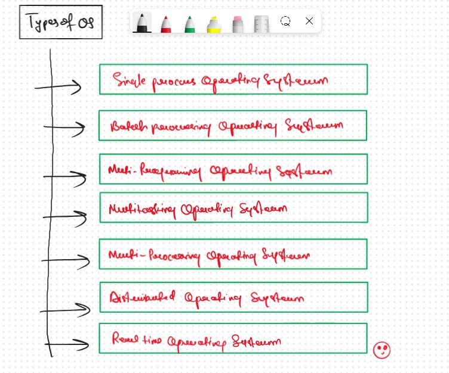

JB TAK FODEGA NHI .... TB TK CHODEGA NHI .... (MAANG)


T2 Types of OS
OS Main Goals
Types of Operating System

Single process OS
only 1 process executes at a time from the ready queue. [Oldest]
Batch-processing OS,
1. Firstly, user prepares his job using punch cards.2. Then, he submits the job to the computer operator.
3. Operator collects the jobs from different users and sort the jobs into batches with similar needs.
4. Then, operator submits the batches to the processor one by one.
5. All the jobs of one batch are executed together.
Multiprogramming increases CPU utilization by keeping multiple jobs (code and data)
in the memory so that the CPU always has one to execute in case some job gets busy with I/O.
- Single CPU
- Context switching for processes.
- Switch happens when current process goes to wait state.
- CPU idle time reduced.
Multitasking is a logical extension of multiprogramming.
- Single CPU
- Able to run more than one task simultaneously.
- Context switching and time sharing used.
- Increases responsiveness.
- CPU idle time is further reduced.
Multi- processing OS more than 1 CPU in a single computer.
- Increases reliability, 1 CPU fails, other can work
- Better throughput.
- Lesser process starvation, (if 1 CPU is working on some process, other can be executed on other CPU).
Distributed Opearing System
- OS mana ges many bunches of resources,>=1 CPUs, >=1 memory, >=1 G PUs, etc
- Loosely connected autonomous , int erc onnecte d computer nodes.
- collection of independent, networked, communicating, and physically separate computational nodes.
Real Time Operatinf Stystem
- Real time error free, computations within tight- time bound aries.
- Air Traffic control system, ROBOTS etc.